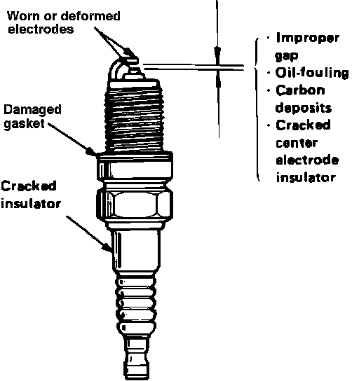
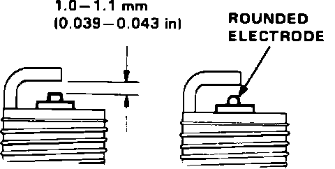

Spark Plug: Testing and Inspection
Spark Plug Inspection:

1. Inspect the spark plugs for:
^ Improper gap
^ Carbon deposits
^ Cracked center electrode insulator
^ Burned or worn electrodes (may be caused by):
^ Excessive mileage
^ Lean fuel mixture
^ Advanced ignition timing
^ Loose spark plug
^ Plug heat range too high
^ Insufficient Cooling
^ Fouled plug (may be caused by):
^ Rich fuel mixture
^ Retarded ignition timing
^ Oil in combustion chamber
^ Incorrect spark plug gap
^ Plug heat range too low
^ Excessive idling/low speed running
^ Clogged air cleaner element
^ Deteriorated ignition coil, coil wire or ignition wires
2. Replace the plug if the center electrode is rounded.
^ All normal driving (Standard Plug):
BCPR6E-11 (NGK)
Q2OPR-U11 (ND)
BCPR6EY-N11 (NGK)
^ Hot climates or continuous high speed driving
BCPR7E-11 (NGK)
Q22PR-U11 (ND)
BCPR7EY-N11 (NGK)
^ Cold climates
BCPR5E-11 (NGK)
Q16PR-U11 (ND)
BCPR5Ey-N11 (NGK)
Spark Plug Inspection:

3. Adjust the gap with a suitable gapping tool.
Electrode Gap: 0.039-0.043 in. (1.0-1.1 mm)